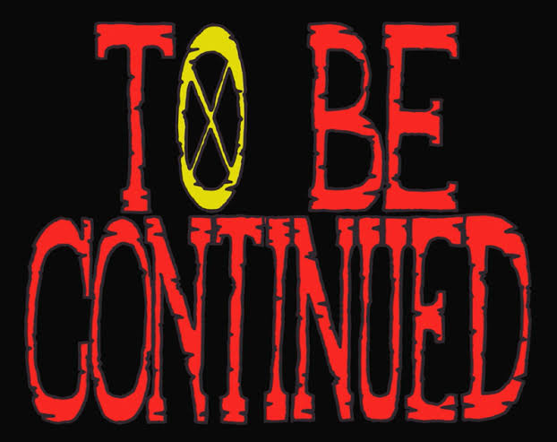

-------------------------
Em um futuro não muito distante, uma empresa chamada Axcend projetava tecnologias avançadas com o intuito de continuar o desenvolvimento da humanidade,
ela criou um chip neural que da ao seu usuário controle total a todas as funções do seu corpo.
Após distribui-lo globalmente e monitorar a vida
das pessoas, a empresa concluiu que um dos maiores impecílios para a evolução humana são os próprios humanos, então começou a planejar uma reestruturação
da sociedade mundial.
Dentre todos os usuários do chip, houveram alguns raríssimos casos de pessoas que receberam permissões e informações além do que deveriam, saindo do radar de controle da empresa
e percebendo que a Axcend não planejava apenas permitir o avanço da humanidade, assim eles criaram uma organização sem nome, chamada em boatos de "Organização Fantasma",
que tem o objetivo de invadir a empresa e destruir todo o controle que a empresa tem sobre o chip e libertar as pessoas.
